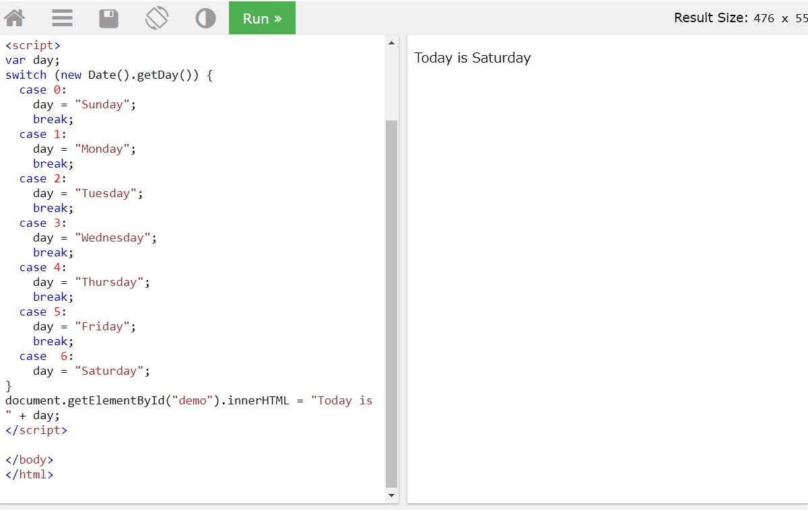
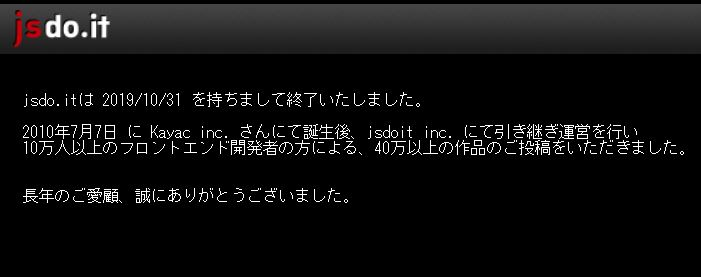

はじめに
ここは「たった１日で基本が身に付く！JavaScript超入門」という書籍を通して学んだことをまとめたページです。
この本は次の大きく８項目で構成されていますが、下記の赤字の項目のみまとめました。
- CHAPTER1 環境設定
- CHAPTER2 JavaScriptの基本的な文法
- CHAPTER3 よく利用される変数や処理の扱い
- CHAPTER4 HTMLを操作する
- CHAPTER5 イベントを扱う
- CHAPTER6 Web APIを利用する
- CHAPTER7 日記アプリを作成する
- CHAPTER8 さらに開発を進めるために
javascriptの基本的な文法
組み込みオブジェクト
組み込みオブジェクトは、JavaScriptで扱う基本的な部品。
組み込みオブジェクトの主な種類
- String
- 文字列を管理する
- Number
- 数値を管理する
- Boolean
- true/falseの真偽値を管理
- Array
- 配列を管理
- Date
- 日時を管理
- JSON
- JSON形式データを扱う
組み込みオブジェクト記述例
//文字列型の変数を宣言
var str = 'JavaScriptを始めよう！';
//文字列の長さを参照
console.log(str.length);
//Date型の変数を宣言
var date = new Date();
//現在の日付日時を出力
console.log(date.toLocaleDateString());
HTMLを操作する
要素の属性を取得・変更する
var input = document.getElementById("inputText");
console.log(input.getAttribute("value")); //出力結果「サンプル」
console.log(input.value); //出力結果「サンプル」
//要素のvalueを変更
input.value = "変更しました";
console.log(input.getAttribute("value")); //出力結果「変更しました」
console.log(input.value); //出力結果「変更しました」
//属性を削除するときは、removeAttribute() を使用する。
- getAttribute
- 属性の値を取得する
- setAttribute
- 属性の値を変更する
textContentとinnerHTMLの使い分け
- textContent
- 内容が文字列のみの場合
- innerHTML
- 内容にHTMLを含める場合
textContentの利用例
このテキストが変わります
innerHTMLの利用例
昨日のネコ

HTMLを文字列として扱うことを「HTMLをエスケープする」という。
※innerHTMLで埋め込みすぎると脆弱性の原因にもなるので、文字だけならtextContentを使う。
イベントの種類
- イベントハンドラー
- イベントと１対１で定義
- 要素内のタグ内or要素オブジェクトのプロパティで定義
- イベントリスナー
- イベントとは１対１以上（１つのイベントに対して複数の処理）で「定義可能
- 要素オブジェクトのaddEventListenerメソッドで定義
イベントハンドラ記述例（要素のタグ内）
＜input type="button" value="クリック！" onclick="buttonClick();"＞
function buttonClick() {
window.alert('クリックしました！');
};
イベントハンドラ記述例（要素オブジェクトのプロパティとして）
＜input type="button" id="btn" value="クリック！"＞
window.onload = function () {
var btn = document.getElementById("btn");
btn.onclick = function () {
window.alert("クリックしました！");
};
};
※ページの読み込みが完了する前にdocument.getElementByIdで取得しようとするとエラーが発生する。そのためwindowオブジェクトのloadイベントの中に記述している。
イベントリスナー記述例
＜input type="button" id="btn" value="クリック！"＞
window.addEventListener("DOMContentLoaded", function(){
var button = document.getElementById("button");
button.addEventListener("click", function(){
window.alert("クリックしました！");
});
button.addEventListener("click", function(){
window.alert("もう一度アラートを出します！");
});
});
※ページの読み込みが終わったときに全体の処理を開始するのが、windowオブジェクトの"DOMContentLoaded"イベント。
イベントをキャンセルするpreventDefaultメソッド記述例
本来Googleのサイトに飛ぶ所をキャンセルする場合
＜a href="http://www.google.co.jp"＞サイトへ＜/a＞
window.addEventListener("DOMContentLoaded", function(){
var link = document.getElementById("link");
link.addEventListener("click", function(event){
event.preventDefault();
window.alert("リンクがクリックされました！");
});
});
イベントを利用して動的に画面を変更する
mouseover・mouseoutイベント
マウスホバーするにゃ
window.addEventListener("DOMContentLoaded", function () {
var image = document.getElementById("catImg");
// マウスオーバー時
image.addEventListener("mouseover", function () {
this.src = "images/cat2.jpg";
});
// マウスアウト時
image.addEventListener("mouseout", function () {
this.src = "images/cat1.jpg";
});
});
動的にUIを制御する
選択するセレクトボックスによって項目が変わる
Web API
- APIとは
- Application Programming Interface
- プログラムが持っていない外部の機能やデータを呼び出して利用できるようにする仕組みの総称。インターネット経由で利用できるものをWeb APIという。
主なWeb API
- Twitter API…ユーザー認証、ツイート、フォロー
- YouTube Data API…動画のアップロードや検索
- ぐるなび API…飲食店や口コミの検索
Web APIで利用される主なデータ形式
- XML…利用者が独自のタグを指定できるマークアップ言語の形式
- RSS…サイトの更新情報などを簡単にまとめたXMLの形式
- JSON…JavaScriptのオブジェクト表記構文でデータを記述する形式
- CSV…データを「,(カンマ)」で区切った形式
JSON Viewer
Chromeの拡張機能にJSONを見やすくするJSON Viewerがある。
画像検索アプリの作成
Flickr APIを利用して画像検索アプリを作成してみる。
入力欄 ＜input type="text" id="keyword" name="keyword"＞
検索ボタン ＜input type="button" id="button" value="検索"＞
画像表示欄 ＜div id="photo_list"＞＜/div＞
//ページ読み込み時に処理
window.addEventListener("DOMContentLoaded", function(){
var button = document.getElementById('button');
// ボタンクリック時の処理
button.addEventListener("click", function(){
// 入力欄からキーワードを取得
var input = document.getElementById("keyword");
var keyword = input.value
// scriptタグを生成
var script = document.createElement('script');
// srcにFlickr APIのURLを指定して検索キーワードをURLエンコードしてtagsパラメーターに指定
script.src="https://api.flickr.com/services/feeds/photos_public.gne?format=json&tags=" + encodeURIComponent(keyword);
// Flickr APIの呼び出し
document.body.appendChild(script);
// 呼び出した後にscriptタグを削除
document.body.removeChild(script);
});
});
//戻り値の関数名が「jsonFlickrFeed」なので、jsonFlickrFeedで関数を作成して処理する
// JSONデータを受け取る関数
function jsonFlickrFeed(data) {
// 結果表示領域をクリア
var photo_list = document.getElementById("photo_list");
photo_list.innerHTML = "";
// itemsキーで検索結果を取得
for (i=0;i＜data.items.length;i++){
// 検索結果内の画像情報を取得
var item = data.items[i];
// img要素を生成
var img = document.createElement("img");
// img要素のsrcに検索結果の画像のURLを指定
img.src = item.media.m;
photo_list.appendChild(img);
}
}
Web APIとオープンデータ
Web APIのように外部に機能を公開する仕組みの一つにオープンデータがある。
- オープンデータ
- 組織や業界内だけで利用してきたデータを整備して、誰でも利用できるように公開する仕組み。
東京メトロオープンデータ開発者サイト
※利用にはユーザ登録が必要です。
オープンデータ活用コンテスト | 東京メトロ 10th
anniversary
オープンデータを利用して作成したアプリなどが見られます。
上記サイトで紹介されているアプリのように、複数のWeb APIやオープンデータを組み合わせて利用することをマッシュアップという。
日記アプリの作成
何が必要か？
- 日記の保存
- 日記の呼び出し
- カレンダーの表
データを保存する
JavaScriptにはキーと値のペアの形式でブラウザにテキストデータを保存できるWebStorageという仕組みがある。
WebStorageは「クッキー」のようなもの。クッキーは4KBまでで、データの有効期限がある。
- WebStorageの種類
- sessionStorage…ウィンドウやタブを閉じるまで有効。5~10MB
- localStorage…永続的に有効。5~10MB
今回の日記アプリではlocalStorageを利用する。
localStorage記述例
//==========データの保存・参照==========
//localStorageを利用
var storage = localStorage;
//storageキー「foo」で「bar」を保存
storage.setItem("foo", "bar");
// 次の書き方でも同じ
//storage.foo="bar";
//storage.["foo"]="bar";
//保存したデータを参照
console.log(storage.getItem("foo"));
// 次の書き方でも同じ
//console.log(storage.foo);
//console.log(storage["foo"]);
//==========保存したデータの削除==========
// localStorageを利用
var storage = localStorage;
// storageにキー：foo で bar を保存
storage.setItem("foo", "bar");
// 次の書き方でも同じ
//storage.foo = "bar";
//storage["foo"] = "bar";
// データを削除
storage.removeItem("foo");
// 保存したデータを参照
console.log(storage.getItem("foo"));
// 次の書き方でも同じ
//console.log(storage.foo);
//console.log(storage["foo"]);
日付の処理
日付の処理はDateオブジェクトを利用する。
Dateオブジェクト記述例（指定した日付を取得）
// 日付オブジェクトのインスタンスを 2020/12/7 の日付で生成
var date = new Date(2020, 12, 7);
// 日にちを1日にセット
date.setDate(1);
// 年月日を取得
var year = date.getFullYear();
//月は0~11で扱うから+1する
var month = date.getMonth() + 1;
var day = date.getDate();
// 取得した曜日を漢字の曜日に置き換える
var weekdays = ["日", "月", "火", "水", "木", "金", "土"];
var weekday = weekdays[date.getDay()];
var str = "今日は" + year + "年" + month + "月" + day + "日(" + weekday + ") です";
console.log(str);
※getMonth(),setMonth(month)は月を1~12ではなく0~11で扱う。
カレンダーに日記機能をつける
さらに開発を進めるためにやること
JavaScriptを一人で練習する
お手本を見ながらプログラムを作れる W3Schools
- W3Schools

実践的なプログラムを作成する jsdo.it
jsdo.itはW3Schoolsと同じようにブラウザ上でJavaScriptを学べるサイト。
※jsdo.itは 2019/10/31 を持ちまして終了いたしました。

jQueryのプラグインを利用する
- jQueryプラグインとは
- jQueryの機能を拡張するためのライブラリのこと。
スライダーを簡単に実装できる slick
レスポンシブデザインに対応したメニューを作成 MeanMenu
まとめ
この本では仕組みなどを理解するというよりは、実際に色々コードを書いて動かしましょうという内容が多いです。読み通すだけなら1日で終わりますが、「なぜそのように動くのか？」などを理解するのは１日では終わりません。
「とりあえずJavaScriptがどんなものなのか知りたい」という方におすすめです。
日記アプリの制作は「JavaScriptを使って何かを作る」という面では良かったです。ただ私を含め、初学者にはちょっとハードルが高いかなと感じました。ツールやアプリ系の開発はドットインストールの方がわかりやすいと思います。
JavaScriptだけでなくWeb系の勉強全般に言えることだと思いますが、一番良いのは「自分が作りたいもの」を作ることだと思います。其のために必要なイベントが出てきたらその都度調べる、みたいなやり方が良いと思います。
私もJavaScriptはまだまだ理解できていないので、精進して参りたいと思います。
最後まで読んでいただきありがとうございました。
m(_ _)m